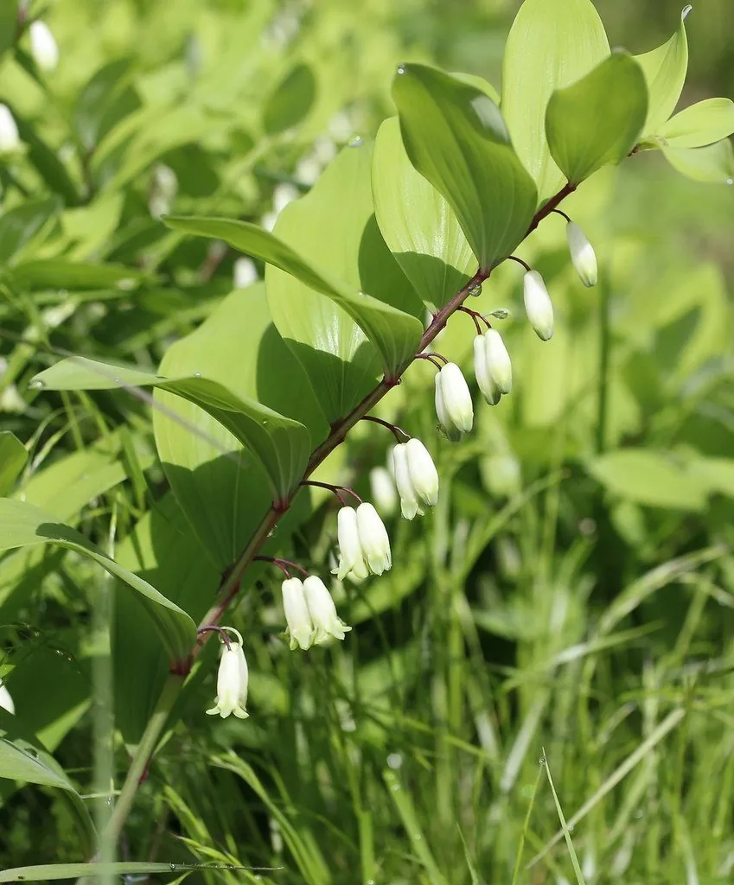

花卉与草本 · 植物界
玉竹 Polygonatum odoratum

天门冬科多年生草本，春季开白色钟状小花，花序下垂，根茎入药，是林下常见的药用与观赏植物，栽培历史悠久。
- 分类
- 门被子植物门纲木兰纲目天门冬目科天门冬科属黄精属
- 栖息环境
- 林下阴湿处、溪边与山坡草丛，喜凉爽半阴
- 地理分布
- 中国东北、华北、华东至西南各地；朝鲜半岛、日本
- 保护级别
- 暂无评估；中国未列入国家重点保护野生植物名录
物种志
玉竹为天门冬科黄精属多年生草本，株高 30–60 厘米，地下具横走的肉质根状茎。茎直立，叶互生，椭圆形至卵状椭圆形，全缘，表面绿色。花腋生，常 1–3 朵，花冠筒状，白色至淡绿色，下垂，花期 5–6 月；果实为浆果，球形，成熟时蓝黑色，果期 8–9 月。
玉竹原产中国东北、华北、华东至西南各地，生于林下阴湿处，朝鲜半岛、日本也有分布。它喜凉爽湿润、半阴的环境，耐寒性强，适宜疏松肥沃、排水良好的土壤。根茎入药称“玉竹”，有养阴润燥、生津止渴之效，也可煲汤、煮粥；植株姿态优雅，是林下常见的药用与观赏植物。栽培以根茎繁殖为主，需保持土壤湿润并适当遮阴。
形态与习性
- 株高30–60 厘米，根状茎横走
- 花期5–6 月，花白色钟状
- 果期8–9 月，浆果蓝黑色
- 光照喜半阴，忌强光暴晒
- 水分喜湿润，忌积水
- 土壤疏松肥沃、排水良好的土壤
- 主要用途根茎入药、煲汤，林下观赏
趣味知识
- 玉竹的根茎横走，节间明显，是辨认它的重要特征。
- 它的花腋生下垂，像一串白色小铃铛。
- 玉竹根茎可入药，也可用来煲汤、煮粥。
- 玉竹耐寒喜阴，适合种在林下和建筑北侧。